2025 National 5 Computing Science marking instructions
Source: Scottish Qualifications Authority (SQA) / Qualifications Scotland. This is a StemInteract HTML companion, not an official HTML edition. Selectable text is supplied alongside original page images. Use the images or original PDF for equations, powers, fractions, vector notation, tables and diagrams; text extraction cannot fully preserve mathematical layout.
Jump to a question
PDF page 1
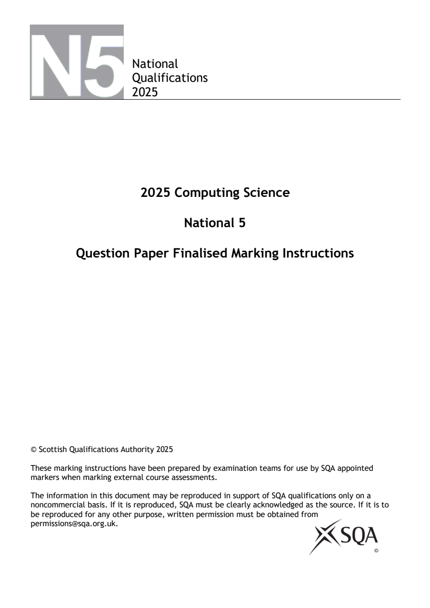
Selectable page text
National
Qualifications
2025
2025 Computing Science
National 5
Question Paper Finalised Marking Instructions
© Scottish Qualifications Authority 2025
These marking instructions have been prepared by examination teams for use by SQA appointed
markers when marking external course assessments.
The information in this document may be reproduced in support of SQA qualifications only on a
noncommercial basis. If it is reproduced, SQA must be clearly acknowledged as the source. If it is to
be reproduced for any other purpose, written permission must be obtained from
permissions@sqa.org.uk.PDF page 2
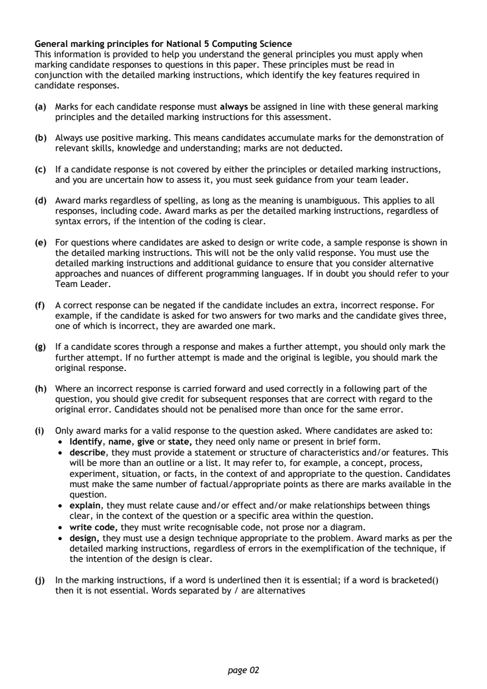
Selectable page text
General marking principles for National 5 Computing Science
This information is provided to help you understand the general principles you must apply when
marking candidate responses to questions in this paper. These principles must be read in
conjunction with the detailed marking instructions, which identify the key features required in
candidate responses.
(a) Marks for each candidate response must always be assigned in line with these general marking
principles and the detailed marking instructions for this assessment.
(b) Always use positive marking. This means candidates accumulate marks for the demonstration of
relevant skills, knowledge and understanding; marks are not deducted.
(c) If a candidate response is not covered by either the principles or detailed marking instructions,
and you are uncertain how to assess it, you must seek guidance from your team leader.
(d) Award marks regardless of spelling, as long as the meaning is unambiguous. This applies to all
responses, including code. Award marks as per the detailed marking instructions, regardless of
syntax errors, if the intention of the coding is clear.
(e) For questions where candidates are asked to design or write code, a sample response is shown in
the detailed marking instructions. This will not be the only valid response. You must use the
detailed marking instructions and additional guidance to ensure that you consider alternative
approaches and nuances of different programming languages. If in doubt you should refer to your
Team Leader.
(f) A correct response can be negated if the candidate includes an extra, incorrect response. For
example, if the candidate is asked for two answers for two marks and the candidate gives three,
one of which is incorrect, they are awarded one mark.
(g) If a candidate scores through a response and makes a further attempt, you should only mark the
further attempt. If no further attempt is made and the original is legible, you should mark the
original response.
(h) Where an incorrect response is carried forward and used correctly in a following part of the
question, you should give credit for subsequent responses that are correct with regard to the
original error. Candidates should not be penalised more than once for the same error.
(i) Only award marks for a valid response to the question asked. Where candidates are asked to:
• Identify, name, give or state, they need only name or present in brief form.
• describe, they must provide a statement or structure of characteristics and/or features. This
will be more than an outline or a list. It may refer to, for example, a concept, process,
experiment, situation, or facts, in the context of and appropriate to the question. Candidates
must make the same number of factual/appropriate points as there are marks available in the
question.
• explain, they must relate cause and/or effect and/or make relationships between things
clear, in the context of the question or a specific area within the question.
• write code, they must write recognisable code, not prose nor a diagram.
• design, they must use a design technique appropriate to the problem. Award marks as per the
detailed marking instructions, regardless of errors in the exemplification of the technique, if
the intention of the design is clear.
(j) In the marking instructions, if a word is underlined then it is essential; if a word is bracketed()
then it is not essential. Words separated by / are alternatives
page 02PDF page 3
Question 1Question 2Question 3Question 4Question 5Question 6Question 7Question 8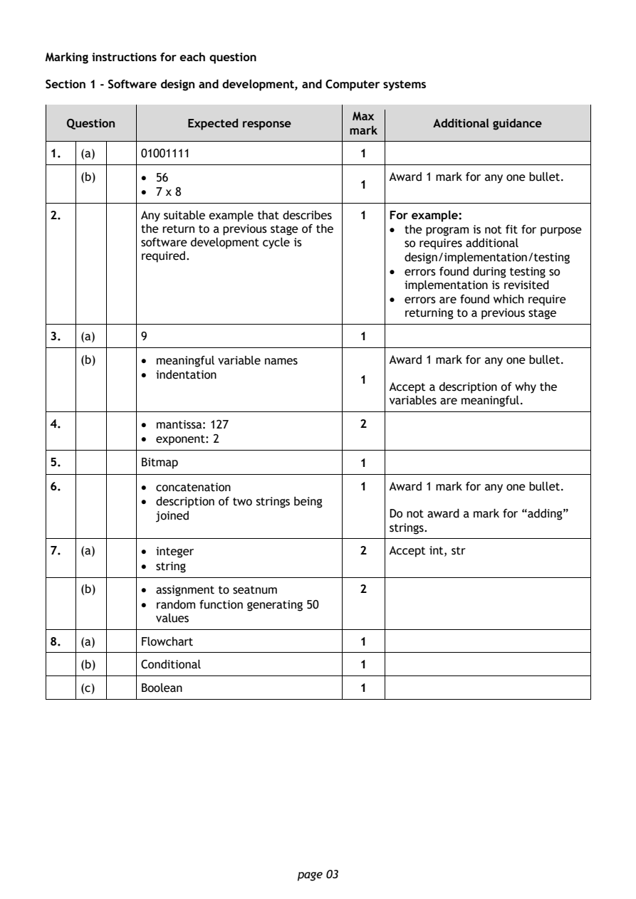
Selectable page text
Marking instructions for each question
Section 1 - Software design and development, and Computer systems
Max
Question Expected response Additional guidance
mark
1. (a) 01001111 1
(b) • 56 Award 1 mark for any one bullet.
1
• 7 x 8
2. Any suitable example that describes 1 For example:
the return to a previous stage of the • the program is not fit for purpose
software development cycle is so requires additional
required. design/implementation/testing
• errors found during testing so
implementation is revisited
• errors are found which require
returning to a previous stage
3. (a) 9 1
(b) • meaningful variable names Award 1 mark for any one bullet.
• indentation
1
Accept a description of why the
variables are meaningful.
4. • ma ntissa: 127 2
• exponent: 2
5. Bitmap 1
6. • concatenation 1 Award 1 mark for any one bullet.
• description of two strings being
joined Do not award a mark for “adding”
strings.
7. (a) • integer 2 Accept int, str
• string
(b) • assignment to seatnum 2
• random function generating 50
values
8. (a) Flowchart 1
(b) Conditional 1
(c) Boolean 1
page 03PDF page 4
Question 9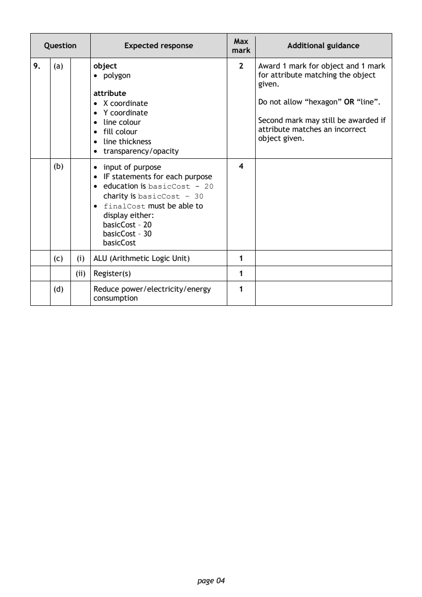
Selectable page text
Max
Question Expected response Additional guidance
mark
9. (a) object 2 Award 1 mark for object and 1 mark
• polygon for attribute matching the object
given.
attribute
• X coordinate Do not allow “hexagon” OR “line”.
• Y coordinate
• line colour Second mark may still be awarded if
attribute matches an incorrect
• fill colour
object given.
• line thickness
• transparency/opacity
(b) • input of purpose 4
• IF statements for each purpose
• education is basicCost - 20
charity is basicCost – 30
• finalCost must be able to
display either:
basicCost – 20
basicCost – 30
basicCost
(c) (i) ALU (Arithmetic Logic Unit) 1
(ii) Register(s) 1
(d) Reduce power/electricity/energy 1
consumption
page 04PDF page 5
Question 10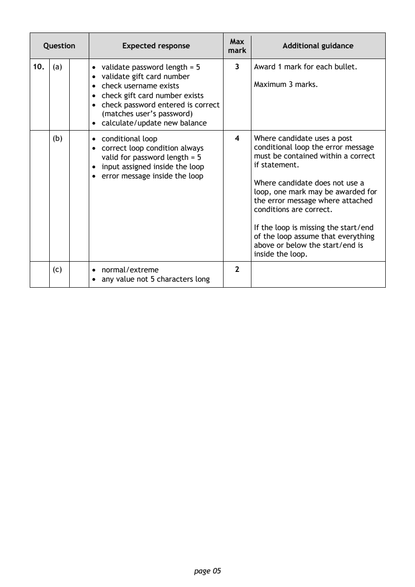
Selectable page text
Max
Question Expected response Additional guidance
mark
10. (a) • validate password length = 5 3 Award 1 mark for each bullet.
• validate gift card number
• check username exists Maximum 3 marks.
• check gift card number exists
• check password entered is correct
(matches user’s password)
• calculate/update new balance
(b) • conditional loop 4 Where candidate uses a post
• correct loop condition always conditional loop the error message
valid for password length = 5 must be contained within a correct
• input assigned inside the loop if statement.
• error message inside the loop
Where candidate does not use a
loop, one mark may be awarded for
the error message where attached
conditions are correct.
If the loop is missing the start/end
of the loop assume that everything
above or below the start/end is
inside the loop.
(c) • normal/extreme 2
• any value not 5 characters long
page 05PDF page 6
Question 11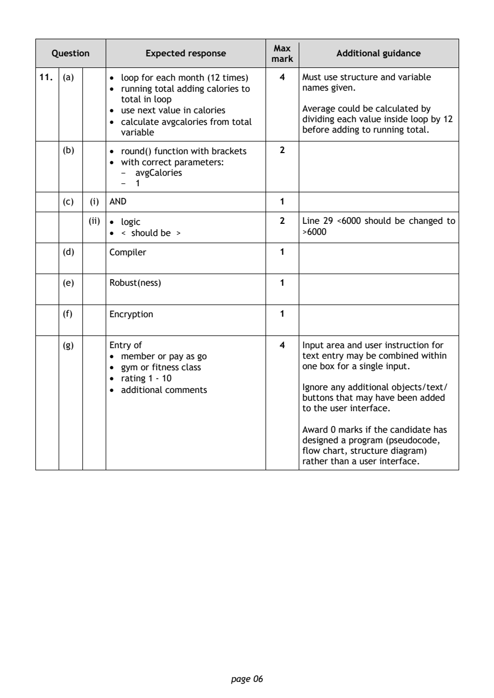
Selectable page text
Max
Question Expected response Additional guidance
mark
11. (a) • loop for each month (12 times) 4 Must use structure and variable
• running total adding calories to names given.
total in loop
• use next value in calories Average could be calculated by
• calculate avgcalories from total dividing each value inside loop by 12
variable before adding to running total.
(b) • round() function with brackets 2
• with correct parameters:
- avgCalories
- 1
(c) (i) AND 1
(ii) • logic 2 Line 29 <6000 should be changed to
• < should be > >6000
(d) Compiler 1
(e) Robust(ness) 1
(f) Encryption 1
(g) Entry of 4 Input area and user instruction for
• member or pay as go text entry may be combined within
• gym or fitness class one box for a single input.
• rating 1 - 10
• additional comments Ignore any additional objects/text/
buttons that may have been added
to the user interface.
Award 0 marks if the candidate has
designed a program (pseudocode,
flow chart, structure diagram)
rather than a user interface.
page 06PDF page 7
Question 12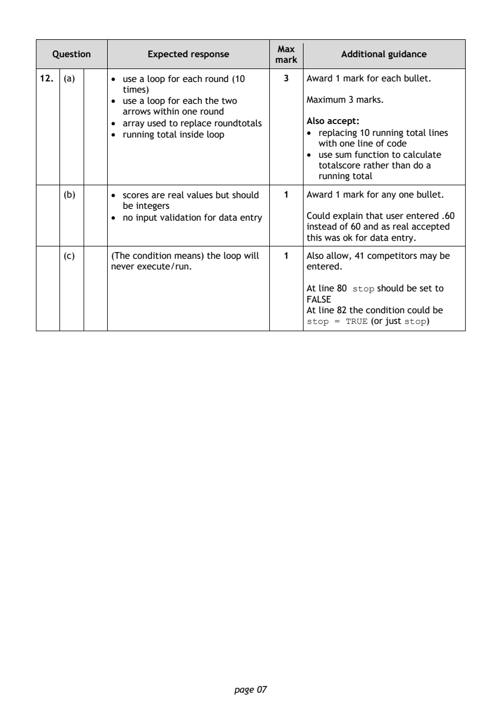
Selectable page text
Max
Question Expected response Additional guidance
mark
12. (a) • use a loop for each round (10 3 Award 1 mark for each bullet.
times)
• use a loop for each the two Maximum 3 marks.
arrows within one round
• array used to replace roundtotals Also accept:
• running total inside loop • replacing 10 running total lines
with one line of code
• use sum function to calculate
totalscore rather than do a
running total
(b) • scores are real values but should 1 Award 1 mark for any one bullet.
be integers
• no input validation for data entry Could explain that user entered .60
instead of 60 and as real accepted
this was ok for data entry.
(c) (The condition means) the loop will 1 Also allow, 41 competitors may be
never execute/run. entered.
At line 80 stop should be set to
FALSE
At line 82 the condition could be
stop = TRUE (or just stop)
page 07PDF page 8
Question 13Question 14Question 15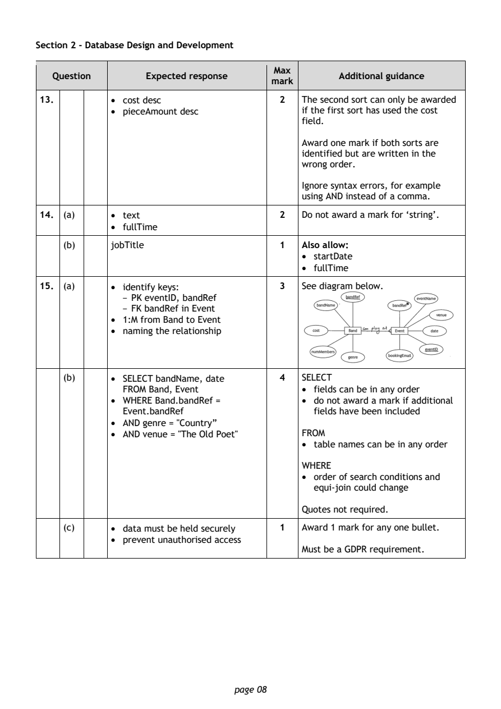
Selectable page text
Section 2 - Database Design and Development
Max
Question Expected response Additional guidance
mark
13. • cost desc 2 The second sort can only be awarded
• pieceAmount desc if the first sort has used the cost
field.
Award one mark if both sorts are
identified but are written in the
wrong order.
Ignore syntax errors, for example
using AND instead of a comma.
14. (a) • text 2 Do not award a mark for ‘string’.
• fullTime
(b) jobTitle 1 Also allow:
• startDate
• fullTime
15. (a) • identify keys: 3 See diagram below.
- PK eventID, bandRef
- FK bandRef in Event
• 1:M from Band to Event
• naming the relationship
(b) • SELECT bandName, date 4 SELECT
FROM Band, Event • fields can be in any order
• WHERE Band.bandRef = • do not award a mark if additional
Event.bandRef fields have been included
• AND genre = "Country”
• AND venue = "The Old Poet" FROM
• table names can be in any order
WHERE
• order of search conditions and
equi-join could change
Quotes not required.
(c) • data must be held securely 1 Award 1 mark for any one bullet.
• prevent unauthorised access
Must be a GDPR requirement.
page 08PDF page 9
Question 16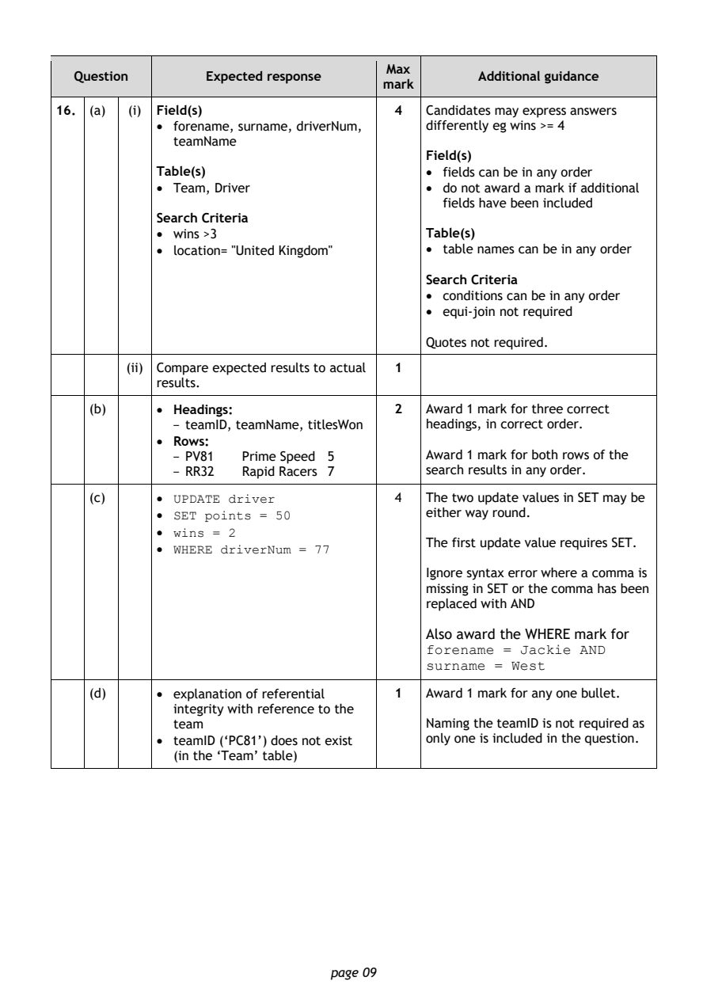
Selectable page text
Max
Question Expected response Additional guidance
mark
16. (a) (i) Field(s) 4 Candidates may express answers
• forename, surname, driverNum, differently eg wins >= 4
teamName
Field(s)
Table(s) • fields can be in any order
• Team, Driver • do not award a mark if additional
fields have been included
Search Criteria
• wins >3 Table(s)
• location= "United Kingdom" • table names can be in any order
Search Criteria
• conditions can be in any order
• equi-join not required
Quotes not required.
(ii) Compare expected results to actual 1
results.
(b) • Headings: 2 Award 1 mark for three correct
- teamID, teamName, titlesWon headings, in correct order.
• Rows:
- PV81 Prime Speed 5 Award 1 mark for both rows of the
- RR32 Rapid Racers 7 search results in any order.
(c) • UPDATE driver 4 The two update values in SET may be
• SET points = 50 either way round.
• wins = 2
The first update value requires SET.
• WHERE driverNum = 77
Ignore syntax error where a comma is
missing in SET or the comma has been
replaced with AND
Also award the WHERE mark for
forename = Jackie AND
surname = West
(d) • explanation of referential 1 Award 1 mark for any one bullet.
integrity with reference to the
team Naming the teamID is not required as
• teamID (‘PC81’) does not exist only one is included in the question.
(in the ‘Team’ table)
page 09PDF page 10
Question 17Question 18Question 19Question 20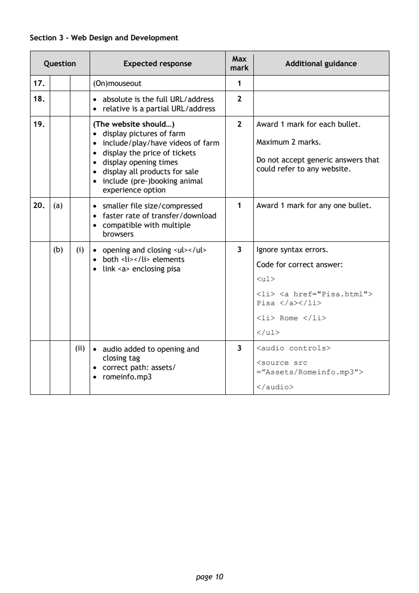
Selectable page text
Section 3 - Web Design and Development
Max
Question Expected response Additional guidance
mark
17. (On)mouseout 1
18. • absolute is the full URL/address 2
• relative is a partial URL/address
19. (The website should…) 2 Award 1 mark for each bullet.
• display pictures of farm
• include/play/have videos of farm Maximum 2 marks.
• display the price of tickets
• display opening times Do not accept generic answers that
could refer to any website.
• display all products for sale
• include (pre-)booking animal
experience option
20. (a) • smaller file size/compressed 1 Award 1 mark for any one bullet.
• faster rate of transfer/download
• compatible with multiple
browsers
(b) (i) • opening and closing <ul></ul> 3 Ignore syntax errors.
• both <li></li> elements
Code for correct answer:
• link <a> enclosing pisa
<ul>
<li> <a href="Pisa.html">
Pisa </a></li>
<li> Rome </li>
</ul>
(ii) • audio added to opening and 3 <audio controls>
closing tag
<source src
• correct path: assets/
=”Assets/Romeinfo.mp3”>
• romeinfo.mp3
</audio>
page 10PDF page 11
Question 21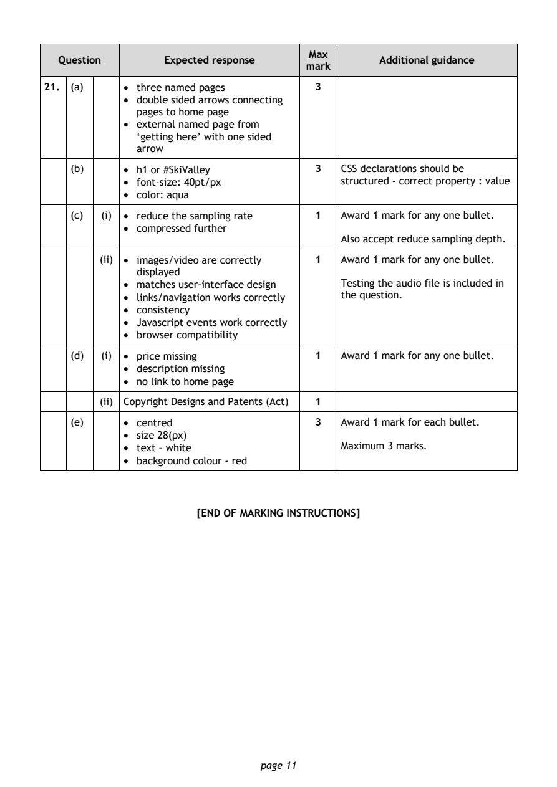
Selectable page text
Max
Question Expected response Additional guidance
mark
21. (a) • three named pages 3
• double sided arrows connecting
pages to home page
• external named page from
‘getting here’ with one sided
arrow
(b) • h1 or #SkiValley 3 CSS declarations should be
• font-size: 40pt/px structured - correct property : value
• color: aqua
(c) (i) • reduce the sampling rate 1 Award 1 mark for any one bullet.
• compressed further
Also accept reduce sampling depth.
(ii) • images/video are correctly 1 Award 1 mark for any one bullet.
displayed
• matches user-interface design Testing the audio file is included in
• links/navigation works correctly the question.
• consistency
• Javascript events work correctly
• browser compatibility
(d) (i) • price missing 1 Award 1 mark for any one bullet.
• description missing
• no link to home page
(ii) Copyright Designs and Patents (Act) 1
(e) • centred 3 Award 1 mark for each bullet.
• size 28(px)
• text – white Maximum 3 marks.
• background colour - red
[END OF MARKING INSTRUCTIONS]
page 11